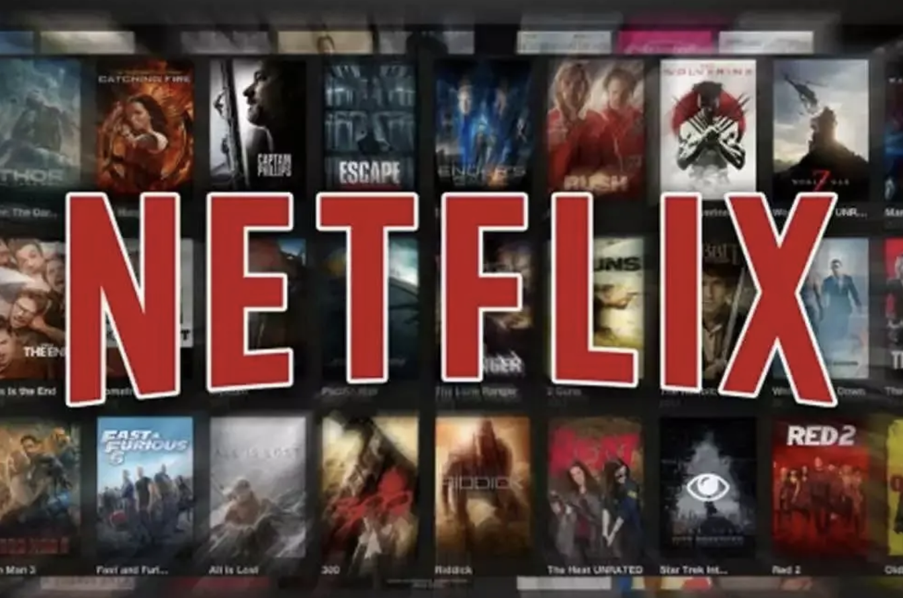
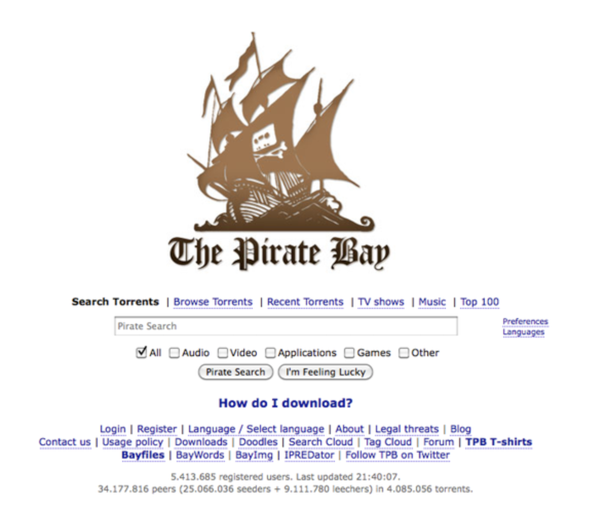
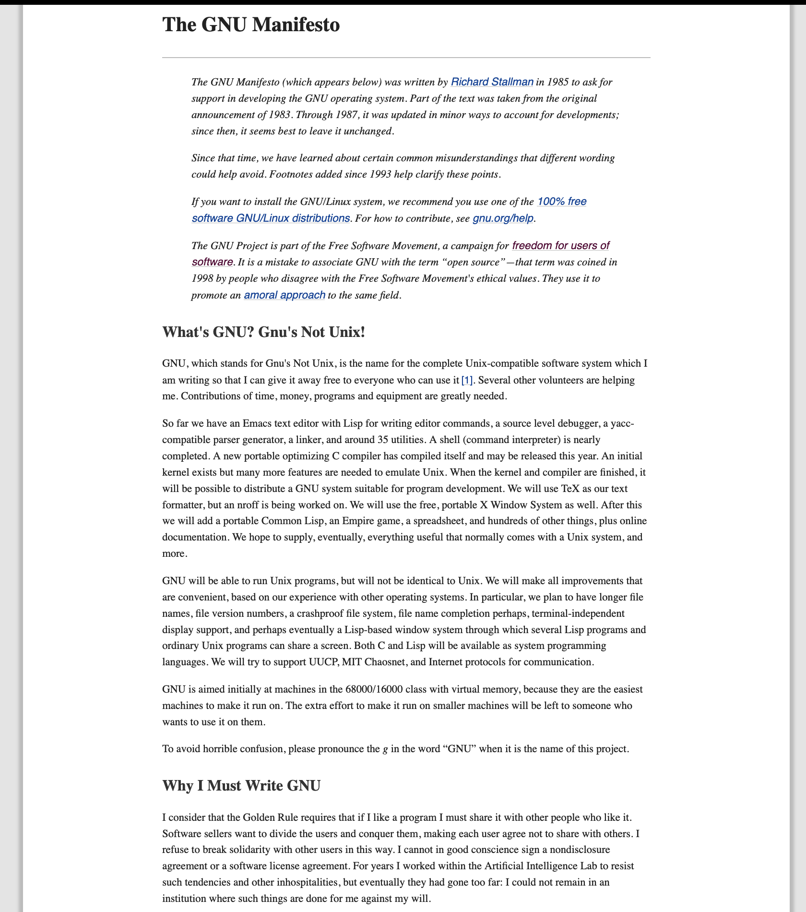
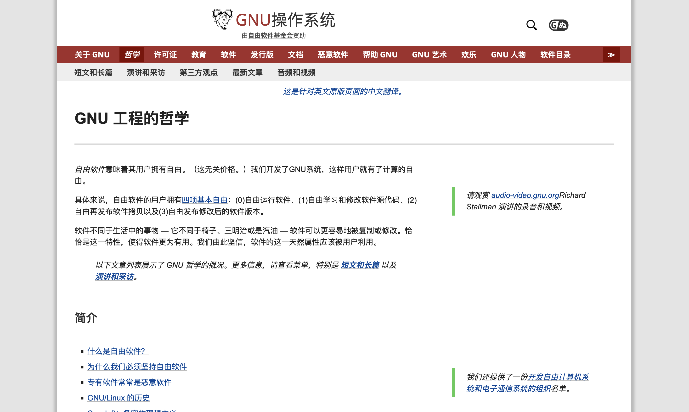
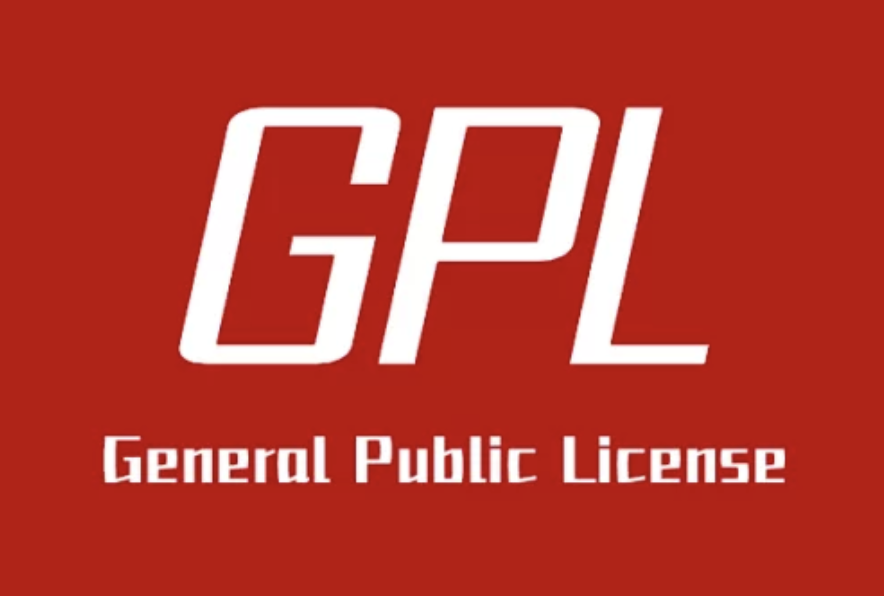
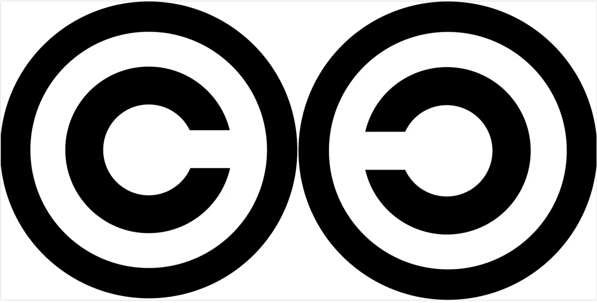
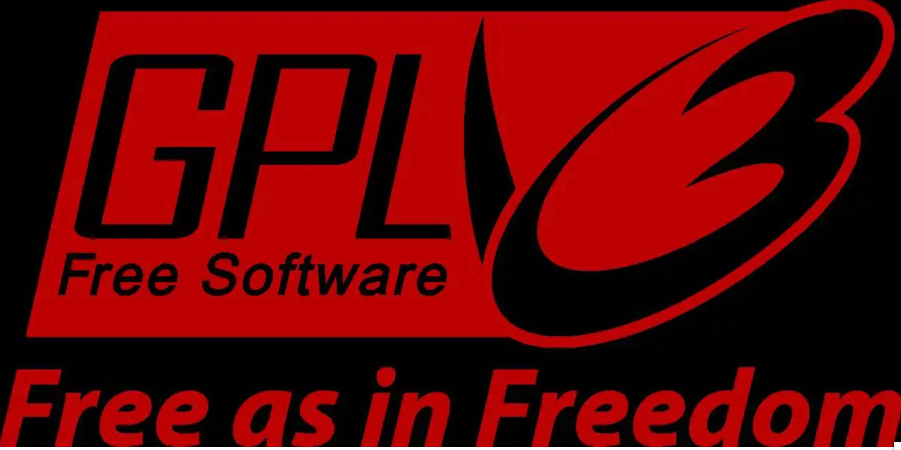
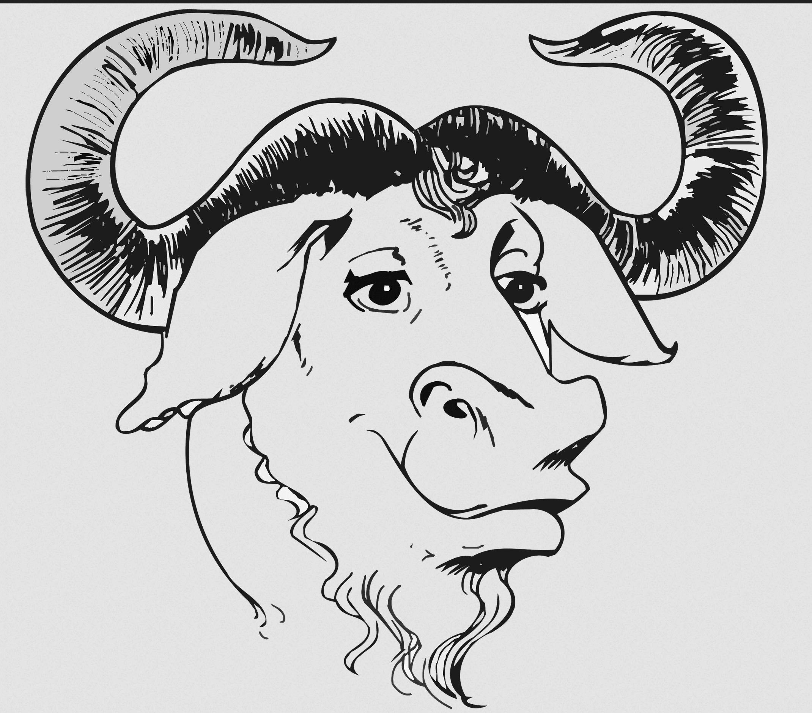
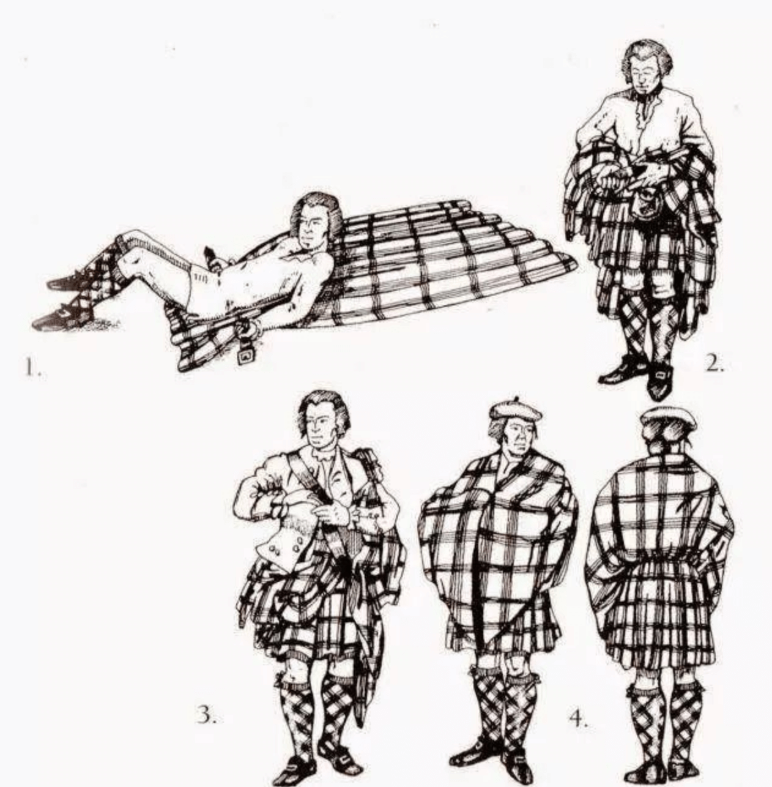
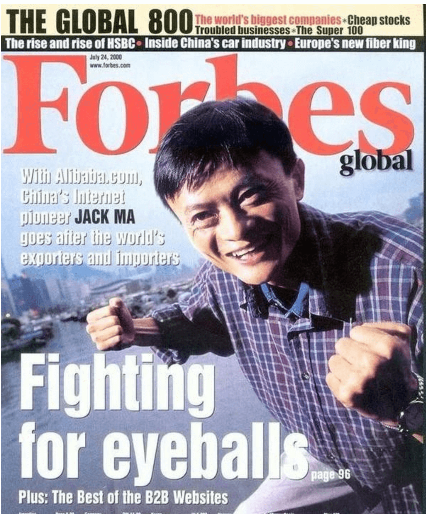

顺序执行 🥊
回忆上次内容
- 软件产业 工业化
- 不可避免
- Stallman 发现了 软件行业
独特之处- 不同于 以往所有的工业的
特点 - 具体 是
什么特点呢？🤔
- 不同于 以往所有的工业的
计算机时代
- 以前的内容 需要制作、存储、传输
- 具体 的 分子物质
- 计算机中 系统、软件和内容 都是
0101- 不再需要 基于分子 构建媒介物 了
- 也不需要 基于分子 进行运输 了
- 更不需要 基于分子的 物理存储了
彻底数字化
- 交付的 基本单位
- 从分子原子 变成了电子和字节
- 就是 0101
- 打开 这些媒体的 软件
- 也一样 都是0101
- 这些 软件 所基于的 系统
- 还一样 还是0101
- 开发 这些软件、系统的 工具
- 都一样 都是0101
- 一切都是
- 010101
- 从分子原子 变成了电子和字节
- 会有 什么
变化呢？
租赁行业的变化
- 原来
- 版权 由 租赁公司购买
- 转租 给用户观看

- 网飞公司
- 不开门店
- 只有一个中心仓
- 用户订阅网飞
- 在线下单
- 网飞直接邮寄DVD
- 信息化
- 提高了周转率
- 网络普及
- 带来 更
新的 方式
- 带来 更
网络化
- 由于可以
- 通过 网络 直接下载

- 各种p2p应用 和 分享网站
- 层出不穷
成本
- 0101 存储复制传播的 成本
- 几乎为
零
- 几乎为
- 试图 收取软件许可证的 思路
- 会 有所改变 吗？
自由软件
- 1983年
- 30+岁的时候rms辞了 MIT 的工作
- 发表了著名的 GNU 宣言

- https://www.gnu.org/gnu/manifesto.en.html
实践
- 1984年 9月
- 斯托曼开发
- 文本处理器GNU Emacs
- 目标是
- 创建 完全自由的 操作系统
- 斯托曼开发
- GNU (GNU's not unix)
- 是
开源的 - 开放源代码
- 源代码 所有人都能看到
- 是

自由
- 当时他说
「软件的自由就是人类的自由」

- 这自由 包括 4个层面的 概念
- 无论用户出于何种目的，必须可以按照用户意愿，自由地运行该软件
- 用户可以自由的学习与修改软件，那做为这个的前提，用户是要能自由的访问到软件的源码
- 用户可以自由的分发软件给别人，以帮助他人
- 用户可以自由的分发修改后的软件版本，以使整个社区从修改中受益
- 这 就是 自由软件运动
- 根据 这些原则
- 发布了 新的 许可证类型
GPL
- GPL 又称为 CopyLeft
- 和 CopyRight 相反的
- GPL许可证
- 给 用户更多权利
- 而不是 向用户索取利益

- CopyRight 有多个含义
- Copy 是 复制
- Right 是 权利
- CopyRight 指的是
- 复制的权力
- 图书时代 复制
- 靠的是 雕版和活字版
- 所以copyright
版权
- 那 CopyLeft 是什么意思 呢?
copyleft
- CopyLeft
- 后面是 Left
- 表示这是和 CopyRight 完全相反的
- 著佐权

- 赋予用户 更多权利
许可证
- 新许可证 名字叫 GPL

- GPL 授权对被授权者 是有要求的，重点强调：
- 和大部分开源软件一样
- 作品放在这里
- 你可以用
- 作者不为 任何物理损失负责
- 如果你 基于这个作品衍生了新的作品
- 那么 这个新的“作品”
- 必须 符合 GPL 协议
- 否则 你就失去原作品的 授权
- 符合 GPL 协议的作品
- 在提供给它的使用者的时候
- 必须同时提供该作品的 GPL 源代码
- 不能对使用者做出限定
野牛logo
- gpl 协议 所在的组织
- 叫做gnu
- 吉祥物 是 北美野牛

- 野牛
- 也是 一种经典配色
野牛
- 苏格兰 高地人 McCluskey
- 移民到 美国康涅狄格州
- 以 猎捕美洲野牛为生
- 因为 自己的 苏格兰人祖先
- 也曾像 美洲印第安人 一样
- 遭受到迫害
- 为印第安人 提供
- 印有自己家族格子 的 毛毯和衬衫
- 红与黑的配色 非常经典
- 印第安人 被 这种红色格子吸引
- 他们认为 这是高地人的敌人的鲜血 染成的
- 并坚信 在战斗中 穿着格子衬衫 可以免遭死亡
- 他们 用野牛皮 进行交换
- 并称这种格子为“野牛格子”
配色传统
- 格子风格来自于kilt
- 传统的 苏格兰服饰

- 不列颠 以 工业革命 席卷世界
- 苏格兰、爱尔兰、非洲、印度、北美、澳洲等地土著等 农牧部落
- 先后被 卷入 了 工业大生产的方式
- 这些 图案 和 配色
- 流传了下来
- 成为 工业时代 之后的
- 一种 复古穿搭
- 也萌芽了 复仇的种子
叛逆
- 作为 叛逆和不羁 的标记
时尚
- 并非 只有无产阶级
- 才喜欢 这个时尚

- 顶级富豪
- 也 对这个设定
- 趋之若鹜
- 暗示着 工业时代 之后
- 应该 会产生
新的变化
- 应该 会产生
总结
- 计算机 本身特性 决定
- 计算机中 保存传递的 是
电子 - 而不用 借助
原子实体 - 存储和分发软件的成本 几乎为
零 - 在 这样的物理基础上
- 出现了 自由软件运动
- 从rms提出的 free software
- 软件的自由就是人的自由
- 到gnu研发 各种软件

- 自由软件运动
- 理想旗帜 高扬
- 但是否能在 现实中 落地呢？🤔
- 我们下次再说！👋